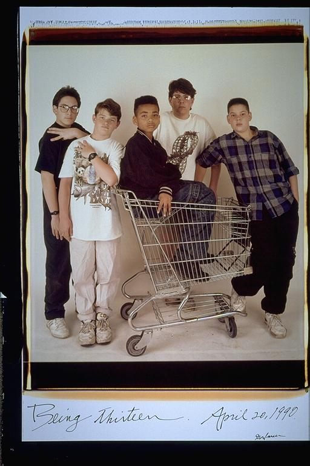

Eugene: "Being 13" - Actually I was 12, cause I'm a year younger than Aldo, Isaac and Rafi. I'm not sure why I am in the shopping cart, but I always(and still do) like to be the center of attention. Judging from the Adidas jacket I have on, that is when I first starting hanging out with Malcolm & Bernard in Roxbury.
Aldo: I remember this picture well, because Isaac's cousin Mathew was in it. And at the time he seemed like a really old person. And as we were walking to the studio, he took a tennis ball that I was playing with, and threw it across the street, and I lost it cause we were in a hurry. I remember being pretty angry about that.
Isaac: This one's a little confusing. There are a lot of elements thrown together. My cousin Matt's in there for no reason (don't get me wrong, I love him to death, but he's sort of just tossed in). Also, I don't know where the shopping carts came from. And why are we holding out three fingers? Huh. We should probably just move on.
